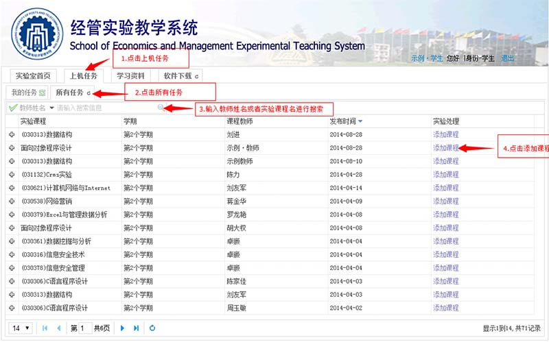
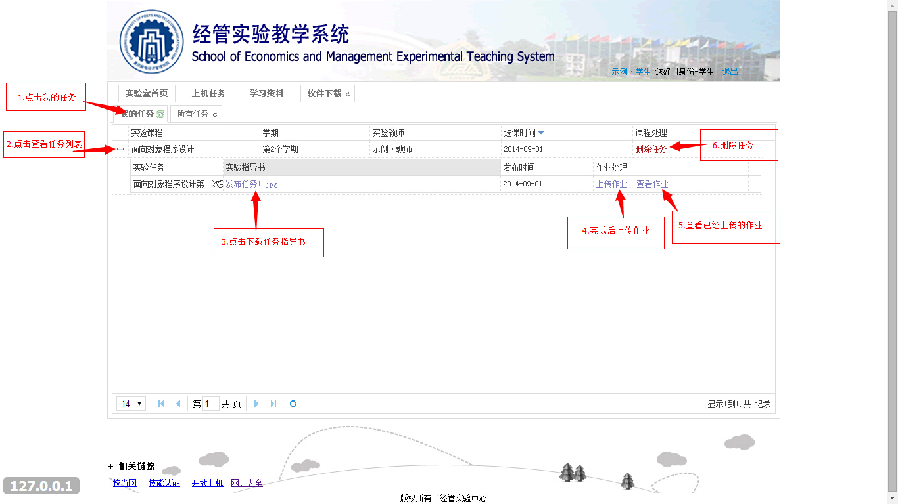
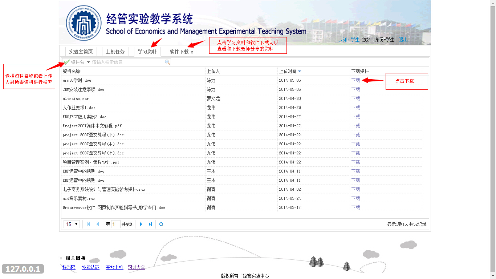

/ 添加课程
- 所有操作如右图所示：
- 登录后，首先点击"上机任务"
- 在显示出的二级菜单中点击"所有任务"
- 所有的任务将会全部罗列出来(也可在搜索框内输入教师姓名或实验课程名搜索出你想添加的课程),找到你要添加的课程的行，点击改行"添加课程"按钮，即可添加成功，添加成功的课程可在"我的任务"中查看

/ 查看任务
- 所有操作如右图所示：
- 在显示出的二级菜单中点击"我的任务"，将列出自己所添加的所有的课程
- 点击你想查看任务该行的"+"按钮，将会展开此课程的所有任务
- 点击实验指导书名称将下载此实验指导书，也可以删除此课程、上传作业、查看已上传的作业，具体操作如右图所示

/ 下载资料
- 所有操作如右图所示：
- 点击"学习资料"或"软件下载"，将列出所有的学习资料或所有的软件
- 在列表中，找到你想要下载的资料或软件的行，点击该行"下载"按钮即可下载（也可通过在搜索框中输入上传者姓名或你想要下载的资料或软件的名称快速查找到你想下载的资料或软件）
